Bricklayer¶
Description¶
Let 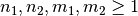 and 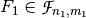 ,  and the Bricklayer function 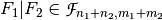. Let 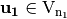, 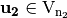 and 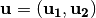, 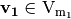, 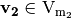 and 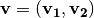.
and the Bricklayer function 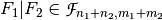. Let 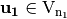, 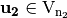 and 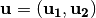, 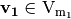, 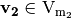 and 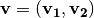.

Library¶
It can be obtained with the following method:
void bricklayer(VBF& X, VBF& F, VBF& G)
Example 1¶
KHAZAD is a block cipher designed by Paulo S. L. M. Barreto together with Vincent Rijmen, which was presented at the first NESSIE workshop in 2000, and, after some small changes, was selected as a finalist in the project. This cipher uses a  S-box composed of smaller pseudo-randomly generated
S-box composed of smaller pseudo-randomly generated  mini S-boxes (the P-box and the Q-box) as represented in the figure:
mini S-boxes (the P-box and the Q-box) as represented in the figure:

The following program provides the Truth Tables of the different intermediate constructions that allow to obtain KHAZAD S-box from P and Q mini S-boxes and the permutation that apply between them.
#include <iostream>
#include <fstream>
#include "VBF.h"
int main(int argc, char *argv[])
{
using namespace VBFNS;
VBF P, Q, PQ, R, QP, S, T, U, A;
NTL::mat_GF2 Tp, Tq;
NTL::vec_ZZ r;
ifstream inputp("P.tt");
if(!inputp) {
cerr << "Error opening " << "P.tt" << endl;
return 0;
}
inputp >> Tp;
P.puttt(Tp);
inputp.close();
ifstream inputq("Q.tt");
if(!inputq) {
cerr << "Error opening " << "Q.tt" << endl;
return 0;
}
inputq >> Tq;
Q.puttt(Tq);
inputq.close();
ifstream input("R.per");
if(!input) {
cerr << "Error opening " << "R.per" << endl;
return 0;
}
input >> r;
R.putper(r);
input.close();
bricklayer(PQ,P,Q);
cout << "Bricklayer of P and Q=" << endl;
cout << TT(PQ) << endl;
Comp(S,PQ,R);
cout << "Composition of 1st bricklayer
with permutation=" << endl;
cout << TT(S) << endl;
bricklayer(QP,Q,P);
cout << "Bricklayer of Q and P=" << endl;
cout << TT(QP) << endl;
Comp(T,S,QP);
cout << "Composition of previous result
with 2nd bricklayer=" << endl;
cout << TT(T) << endl;
Comp(U,T,R);
cout << "Composition of previous result
with permutation=" << endl;
cout << TT(U) << endl;
Comp(A,U,PQ);
cout << "Composition of previous result
with 1st bricklayer=" << endl;
cout << TT(A) << endl;
return 0;
}
If we use the Truth Tables of P and Q and the representation of the permutation between them, the output are the Truth Tables described KHAZAD section in “Analysis of NESSIE project cryptographic algorithms”. Spectral radius, nonlinearity, linear potential, differential potential and linearity distance for bricklayer of P and Q mini S-boxes:

Example 2¶
The following program provides the balancedness and correlation immunity (resiliency) of two Vector Boolean functions given its Truth Table in hexadecimal representation and calculates the same criteria for the bricklayering of F and G taking as inputs their Truth Tables in hexadecimal representation.
#include <iostream>
#include <fstream>
#include "VBF.h"
int main(int argc, char *argv[])
{
using namespace VBFNS;
VBF F, G, H;
ifstream input1(argv[1]);
if(!input1) {
cerr << "Error opening " << argv[1] << endl;
return 0;
}
F.putHexTT(input1);
input1.close();
ifstream input2(argv[2]);
if(!input2) {
cerr << "Error opening " << argv[2] << endl;
return 0;
}
G.putHexTT(input2);
input2.close();
cout << "Correlation immunity of F: " << CI(F) << endl;
if (Bal(F)) {
cout << "F is a balanced function" << endl;
} else {
cout << "F is a non-balanced function" << endl;
}
cout << "Correlation immunity of G: " << CI(G) << endl;
if (Bal(G)) {
cout << "G is a balanced function" << endl;
} else {
cout << "G is a non-balanced function" << endl;
}
bricklayer(H,F,G);
cout << "Correlation immunity of F bricklayer G: " << CI(H) << endl;
if (Bal(H)) {
cout << "F bricklayer G is a balanced function" << endl;
} else {
cout << "F bricklayer G is a non-balanced function" << endl;
}
return 0;
}
If we use the Boolean functions with the following Truth Tables (in hexadecimal representation) as inputs:
6cb405778ea9bd30
5c721bcaac27b1c5
The output would be the following:
Correlation immunity of F: 1
F is a balanced function
Correlation immunity of G: 2
G is a balanced function
Correlation immunity of F bricklayer G: 1
F bricklayer G is a balanced function